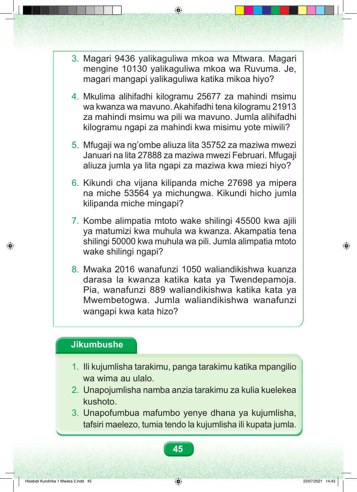

3. Magari 9436 yalikaguliwa mkoa wa Mtwara. Magari mengine 10130 yalikaguliwa mkoa wa Ruvuma. Je, magari mangapi yalikaguliwa katika mikoa hiyo? 4. Mkulima alihifadhi kilogramu 25677 za mahindi msimu wa kwanza wa mavuno. Akahifadhi tena kilogramu 21913 za mahindi msimu wa pili wa mavuno. Jumla alihifadhi kilogramu ngapi za mahindi kwa misimu yote miwili? 5. Mfugaji wa ng’ombe aliuza lita 35752 za maziwa mwezi Januari na lita 27888 za maziwa mwezi Februari. Mfugaji aliuza jumla ya lita ngapi za maziwa kwa miezi hiyo? 6. Kikundi cha vijana kilipanda miche 27698 ya mipera na miche 53564 ya michungwa. Kikundi hicho jumla kilipanda miche mingapi? 7. Kombe alimpatia mtoto wake shilingi 45500 kwa ajili ya matumizi kwa muhula wa kwanza. Akampatia tena shilingi 50000 kwa muhula wa pili. Jumla alimpatia mtoto wake shilingi ngapi? 8. Mwaka 2016 wanafunzi 1050 waliandikishwa kuanza darasa la kwanza katika kata ya Twendepamoja. Pia, wanafunzi 889 waliandikishwa katika kata ya Mwembetogwa. Jumla waliandikishwa wanafunzi wangapi kwa kata hizo? Jikumbushe 1. Ili kujumlisha tarakimu, panga tarakimu katika mpangilio wa wima au ulalo. 2. Unapojumlisha namba anzia tarakimu za kulia kuelekea kushoto. 3. Unapofumbua mafumbo yenye dhana ya kujumlisha, tafsiri maelezo, tumia tendo la kujumlisha ili kupata jumla. 45 Hisabati Kundirika 1 Mwaka 2.indd 45 23/07/2021 14:43